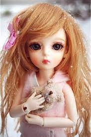
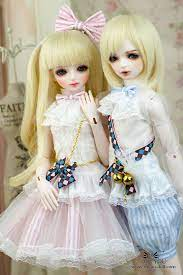
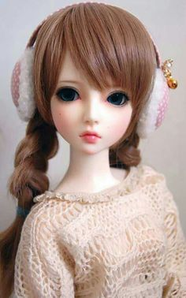
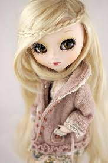
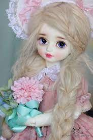

The earliest dolls were made from available materials such as clay, stone, wood, bone, ivory,
leather, or wax. Archaeological evidence places dolls as the foremost candidate for the oldest known toy.
Wooden paddle dolls have been found in Egyptian tombs dating to as early as the 21st century BC.
From Wikipedia, the free encyclopedia
The main article for this category is Doll.
This category has the subcategories:
Art dolls production demand a wide range of skills and technologies, including sculpting, painting, and costuming. They are often multimedia objects made from materials such as fabric, paperclay, polymer clay, wax, wood, porcelain, natural or synthetic hair, yarn, wool, and felt. As works of art, art dolls can take weeks or months to finish.
One-Of-A-Kind (OOAK) art dolls may command prices in the thousands of dollars; publications featuring established and emerging doll artists support collection, and artist groups, such as the National Institute of American Doll Artists (NIADA), promote the art form.

There is an entire industry related to the mediums used in creating art dolls. Sculpting from clay is very prevalent. There are many varieties including air-dry, polymer clay, modeling clay to paperclay. Some top brands include ProSculpt, Sculpey, La Doll, and Creative Paperclay.
The Island of the Dolls, originally owned by Don Julián Santana Barrera, is full of dolls hanging from trees and buildings covered with cobwebs and insects. The place was named during the 1950s when the owner began to hang them as protection against evil spirits. Santana was a neighbor of the Barrio de la Asunción, where he used to go to drink pulque after having sold his vegetables, until, due to superstitions, he began to preach the Bible, being expelled from the

According to legend, a young girl drowned entangled among the lilies of the canal and her body was found on the banks of the Santampa chinampas. Santana began to experience inexplicable situations so, terrified, placed dolls that he found in the garbage or in the canals of Cuemanco with the idea that they would scare the soul of the young girl who would cry out "I want my doll". He also found a doll floating nearby and, assuming it belonged to the deceased girl, hung it from a tree as a sign of respect, then when the owner of the island died he was in the same place where he saw the girl
In 1987, an eco-tourist rescue was made and the island was found covered with water lily. Since then and after the death of Santana, the chinampa became a place of great tourist affluence. The place gained fame after 1943, when Mexican filmmaker Emilio Fernández filmed María Candelaria there, with Dolores del Río and Pedro Armendáriz as protagonists.[5] A significant number of international and local channels have featured articles on the island, including The Huffington Post, Travel Channel and ABC News.
The dolls are still on the island, which is accessible by boat. The island was featured on the Travel Channel show Ghost Adventures and the Amazon Prime show Lore. It was also featured in BuzzFeed Unsolved
During the period from the mid to late nineteenth century until the early 20th century, popularly known as the "Victorian Era," people typically used elaborate physical representations and rituals to mark the death of a loved one. 
Because deaths typically took place in the home, the body of the deceased was usually prepared for burial, and often displayed for a period in the
Because of the close proximity of death to the home, and the high mortality rates for children and infants, children were often familiar with and exposed to death and dead bodies from a very early age. By the late nineteenth century, it became customary to commission a "mourning doll" to lay at the grave of a deceased child. These became widely popular as a coping mechanism for families dealing with the death of a child.
A googly eyed doll or googly is a doll of a type popular in the early 20th century. The dolls featured large, bulging eyes, often looking off to one

Their heads were made of bisque, with bodies made from cloth, papier-mâché, bisque, or a combination of
Researchers have suggested that the term googly eyed originated from the German Guck Augen meaning "ogling eyes".
Googly eyed dolls are considered Collectable and may be valuable.[
Worry dolls (also named trouble dolls; Spanish Muñeca quitapena) are small, mostly hand-made dolls that originate from the highland indigenous people of Guatemala but are also found in Mexico
